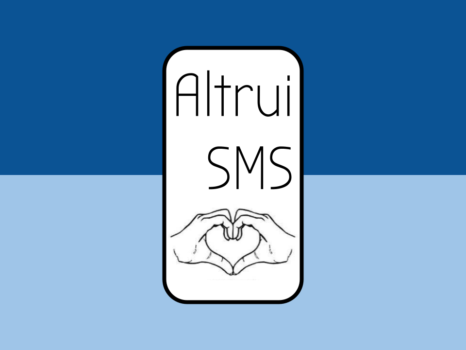
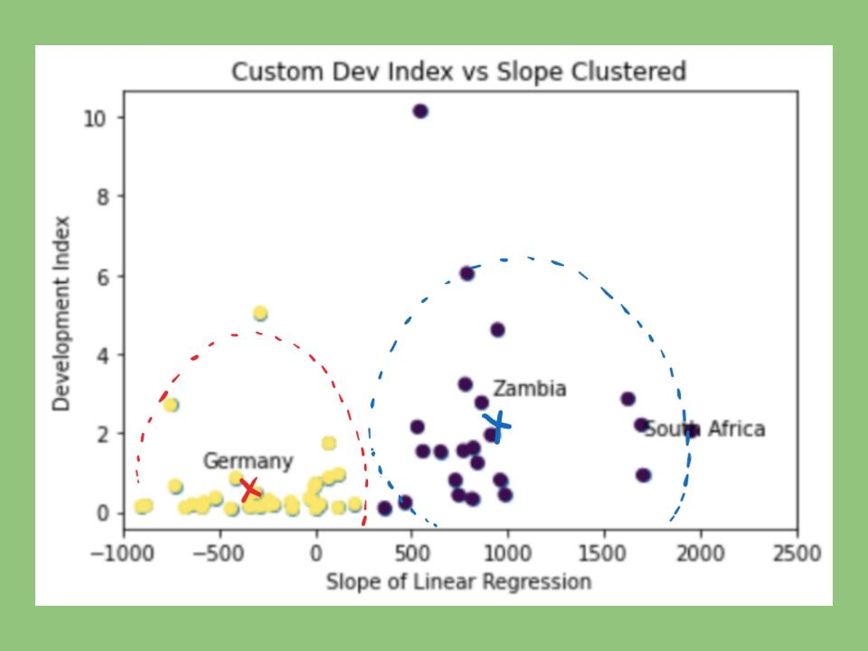

Education
Selected Coursework:
Machine Learning, Data Science, Systems Programming, Principles of Programming Languages, Data Structures, Linear Programming, Linear Algebra, Multivariable Calculus
| Institutions |
School of Engineering and Applied Sciences
Philadelphia, PA
Accelerated Masters in Robotics - Expected: May 2025 |
Haverford, PA
Majors in Computer Science and Religion - Expected: May 2024 |
Budapest, Hungary
Study Abroad Semester - Fall 2022 |
Silver Spring, MD
High School Diploma - June 2020 |
Work Experience
Cloud Engineer Intern @ IBM
May 2022 - August 2022
Bethesda, MD
Intern in the IBM Summit Program. Fill out the rest of this at some point.
Research Assistant @ Haverford College
March 2022 - Present
Haverford, PA
Worked with Dr Alivin Grissom II on using transformer models to predict verbs enabling simultaneous machine translation.
Computer Science Teaching Assistant @ Haverford College
August 2021 - May 2022
Haverford, PA
Answered student questions during weekly office hours and lab sessions, graded programming assignments in python and java,
attended weekly team meetings to discuss difficulty and student experience for each assignment.
Director of Swim Lessons, Pool Operator, Assistant Swim Coach, Lifeguard
May 2017 - August 2021
Silver Spring, MD
Director of Swim Lessons: Coordinated the swim lessons program with ~150 participants; interviewed, hired, and managed a staff of 10 people; communicated program logistics with parents and responded to inqueries.
Assistant Swim Coach: Ran morning and evening practices; worked with swimmers to improve their skills and technique; coached swim meets; ran team events.
Pool Operator and Lifeguard: Maintained proper chemical levels in the pools; managed lifeguards on duty; ensured the saftey of all patrons.
September 2017 - December 2017
Rockville, MD
Disassembeled, fixed, and reassembled malfunctioning 3D printers. Designed, modeled, and 3D printed pieces for escape room puzzles using CAD software programs.
Other Experience
HaverCode Co-Head
Feburary 2022 - Present
board member since October 2021 | member since September 2020
HaverCode is a computer sceince focused club for students interested in pursuing careers in technology. The club serves as a student-centered platform for learning, advice, and finding people to work with.
We host various workshops, information sessions, and social events. As co-head I run weekly meetings, communicate with the computer sceince department faculty to discuss areas of improvment and collaboration,
plan and run events, and most importantly work to create an encouraging, inclusive, and supportive environment for all club members and computer science students here at Haverford.
computer sceince department
Hiring Comittee Student Representative
March 2022 - Present
Sit on the committee the computer sceince department staff has formed to hire visiting professors. Attend first interviews with the committee and help decide who to bring to campus for a lengthier interview process.
Attend and advertise visiting professor candidate research talks, mock lessons, and student lunches. Discuss student opinions on the candidate and share them with the rest of the committee.
barrie prep
student government president
June 2020 - June 2021
grade representative since September 2017
Planned and ran middle and high school assemblies, held weekly student government meetings and individual check ins with exective positions. Oversaw all
committees, event planning, budgeting, and operation of the school store. Ran fall and spring elections. Attended meetings with faculty, staff, and administration to discuss policy change, events, and concerns.

Won Best Hack for Social Good @ Philly Codefest
AltruiSMS is a SMS chatbot paired with a web application to help homeless and low-income people find resources they need (no wifi needed!). The web application served as a registration portal for shelters and organizations holding welfare distribution events.
The chatbot is a wifi-independent user interface capable of providing people with the adress and directions to their nearest shelter, as well as a notification system to let them know when supplies they need are avalible nearby.
This was a team project, I created the chatbot and all of its functionalites

Completed @ JP Morgan Chase's Data for Good
Classification for Global Good
was a data analysis project focused on answering the question: To maximize global good, which countries should recieve agricultural investments.
We began by plotting a regression line for each country to map their CO2 emmissions as a function of agricultural expenditures. Then using the slope of these lines and a "social good" metric we created as features, we used K-means to cluseter the countries into two categories: reccommended and not-reccommended investments.
This was a team project, I worked on data cleaning, feature importance models, and the clustering
Programming
Proficient: Python
Java
C#
C++
Python Libraries: NumPy, Matplotlib, pandas, scikit-learn, TensorFlow, Keras, Vowpal Wabbit
Basic: HTML
CSS
JavaScript
UNIX
Assembly
R
Racket
Technical
Computer Science
GitHub
Jupyter Notebooks
Google Colabratory
Vim
Arduino
General
Google Suite
LaTeX
Markdown
Microsoft Word
Design
Django
PhotoShop
OnShape
TinkerCad
Glowforge
Personal
Communication •
Critical Thinking •
Teaching •
Problem Solving •
Leadership